苦修之路
- 赤足、苦衣、斋戒
- 身体是需要禁锢的罪之囚笼
- 公认的"圣洁"证明
- 尤塔 45 岁离世 · 意志耗尽
TIME'S DAUGHTERS · 002 — 12 世纪 · 莱茵兰
1098 – 1179。她把自己称作"一个贫穷、未受过教育的小女子"，却让整个 12 世纪的欧洲——从教皇到皇帝——都不得不侧耳倾听。
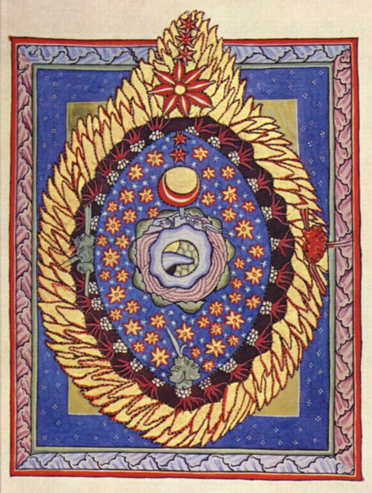
PRIMER · 30 SECONDS
先建立坐标，再进入争议。每条只回答一个问题。
1163 · AD FREDERICUM IMPERATOREM
先从她最不谦卑的一刻开始，再退回塑造她的世界。
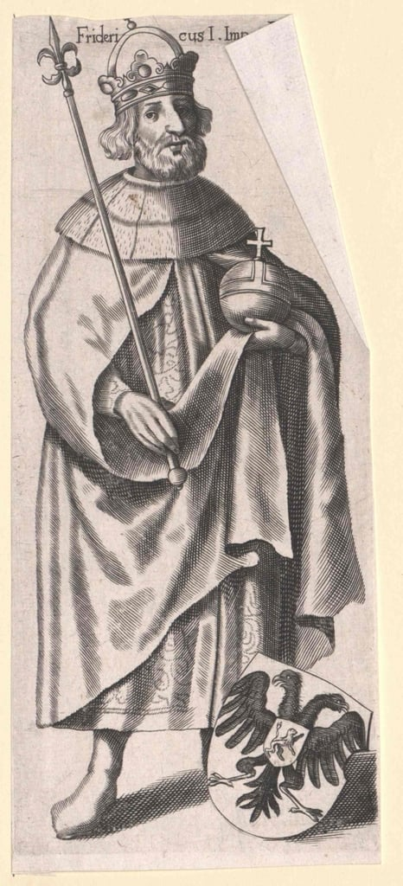
"你这藐视我的不敬神者，必将为这恶行追悔莫及！君王啊，若想活命就侧耳倾听！否则我的利剑必将刺穿你！"
1098 年生于莱茵河畔的伯默斯海姆，第十个孩子。八岁被父母作为"什一税"送进迪西博登贝格的本笃会修道院。
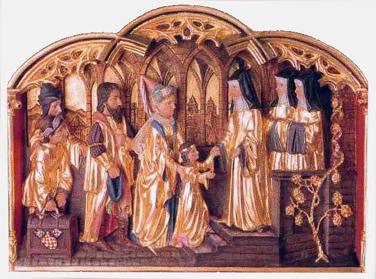
她所处的时代由信仰塑造：西罗马崩溃后，基督教是唯一把破碎欧洲勾连起来的社会框架；刀剑的君王 vs 灵魂的教皇，两条平行的权力线互相拉扯。1077 年"卡诺莎之行"里，皇帝亨利四世赤足伫立雪中三日求宽恕——教权曾一度凌驾皇权。
修道院的高墙看似是隔绝亲情的囚笼，实则是保护女性才智的盾牌。 时代结构 · 一种解读
在这个国王和主教主宰的世界里，女性无缘公共教育，也无权染指以继承和武力为核心的世俗权力。就连教会内部，圣保罗一句"女性在教会应闭口不言"就足以关上大门。
于是，进入修道院这条最狭窄的路，成了有才华的女性唯一的选项——一种"神圣治外法权"，让她们在世俗规则之外，重新建立自己的智识社群。
八岁那年，她被托付给一位年轻的贵族女性——尤塔·冯·斯蓬海姆。六年后，她们一同发下隐修誓言，住进一间与世隔绝的斗室。
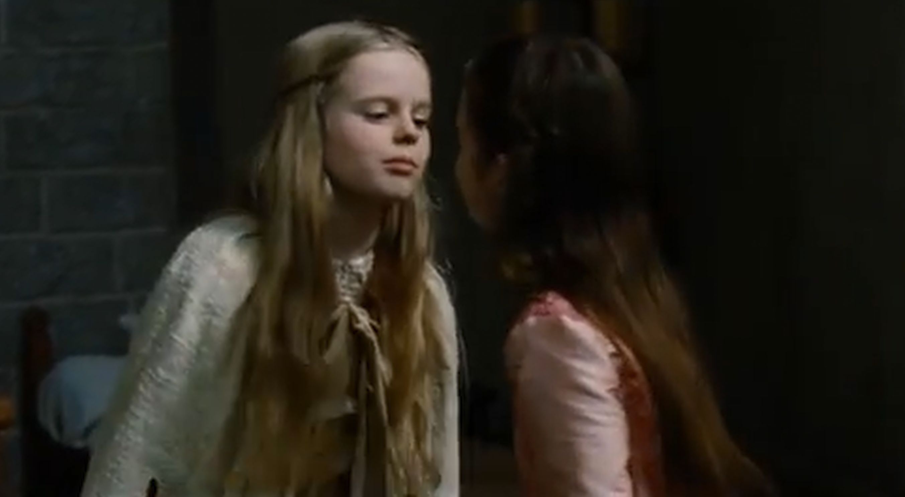
尤塔是极端苦修者——赤足、苦衣、斋戒，用肉体的痛苦换灵魂的超脱。但缮写室里同时闪着另一束光：拉丁文、《圣经》、古典著作。修道院既是磨炼信仰的熔炉，也是那个动荡年代里的"知识方舟"。
令人意外的是，为她打开知识之门的正是尤塔本人。学识不算高的尤塔亲自教她读写拉丁文，把最宝贵的工具——一把打开知识宝库的钥匙——交给了这个孩子。1136 年尤塔逝世，38 岁的希尔德加德被众修女推为新的 Magistra。
以过度苦修摧残身体之人，常行于愤怒中。 希尔德加德的日后判断
要领导社区，她必须锻造自己的权威。她走上了两条平行、最终合流的道路——一条通往神启，一条扎根于学识。
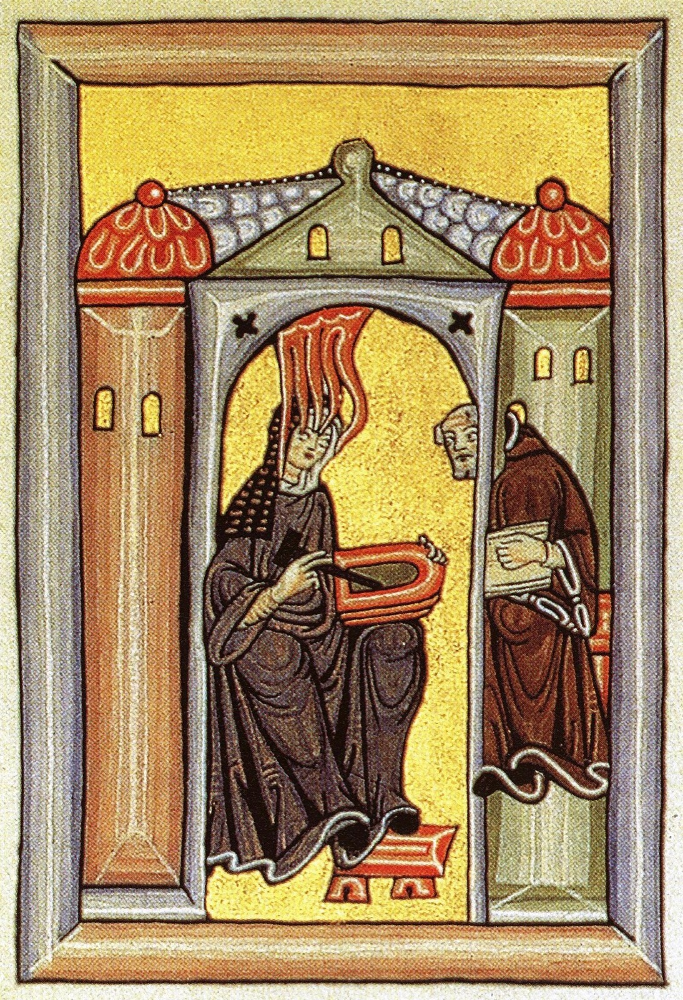
她自三岁起就看见"生命之光的阴影"。1141 年一道神圣命令降临——"写下你所看到和听到的一切！"她向后来的圣人伯尔纳写信求认可，用十年时间写成《认识主道》Scivias（1151），此后又完成《生之功德书》与《神之功业书》。
与神启并行，她向男性修道院朋友借书自学：《圣经》注释、天文学、阿拉伯医学译本。她的《自然史》Physica 是一部博物百科，首次记载啤酒花防腐；她的《病因与疗法》Causae et Curae 是一本涵盖诊断、放血、草药、外科的医学手册。
最坚实的权威，永远建立在智慧与勇气的双重基石之上。 Two Pillars · 神启与学识
她用来自天上的"神启"发出声音，又用来自大地的"学识"赋予这声音以不容置疑的力量。先知与学者共享同一个身体——这是她后半生所有权威动作的地基。
她是迄今作品流传最广、数量最多的中世纪作曲家。她坚称自己"未经任何人教导"，所有旋律皆源于神启。
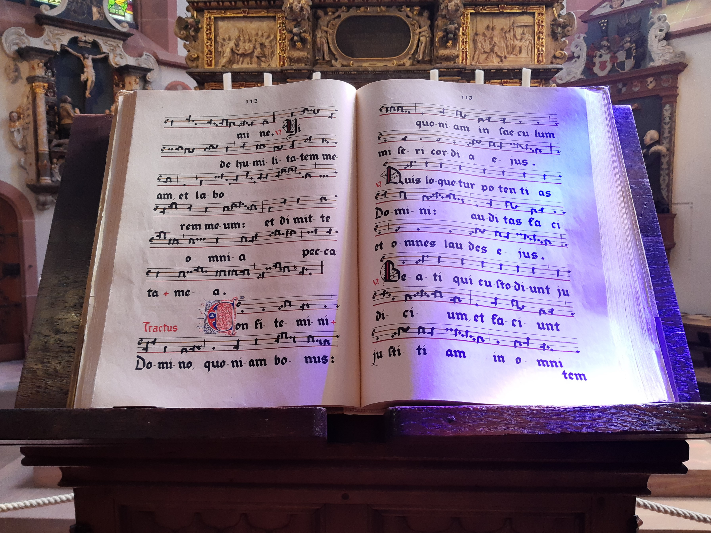
她的圣歌被收进《天启交响曲》（Symphonia armonie celestium revelationum）——70 余首。其中最广为人知的是《美德典律》（Ordo Virtutum, 1151），西方历史上现存最早的非礼拜仪式音乐剧。
乐音即和谐，是神性的体现；邪恶则是和谐的丧失，是刺耳的噪音。 Ordo Virtutum · 神学宣言
剧中，能唱歌的"美德"们对抗只会咆哮、无法歌唱的"魔鬼"，最终把一个堕落的灵魂领回信仰。领她回来的不是男性先知，而是团结一致的女性美德——这在修女们的耳中，是一份充满力量的宣告。
她的领导，与她的音乐一样，并非源于严苛的戒律，而是和谐的艺术。这一章由四个环环相扣的动作组成——从与修女的关系开始，到通信欧洲结束。
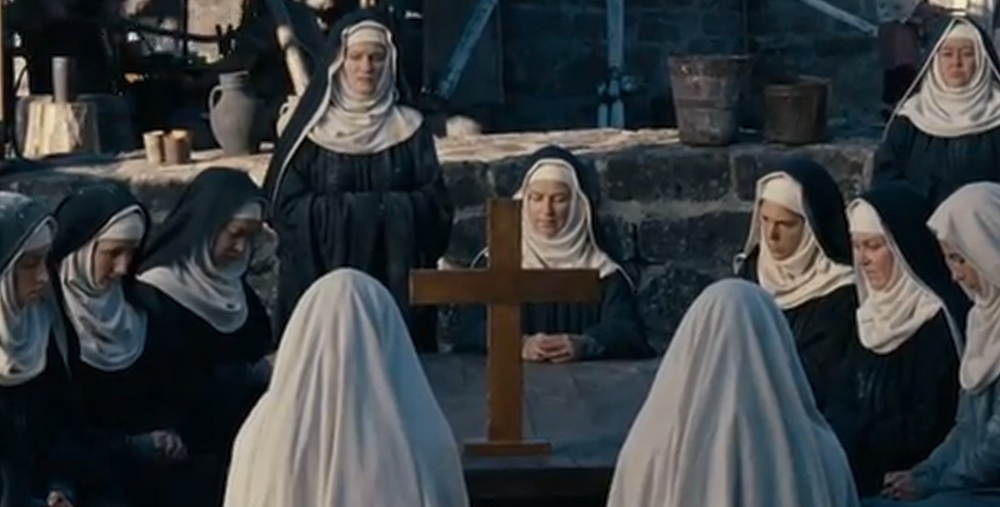
她与年轻修女施塔德的理查迪斯的故事最能说明她的领导方式：她视她如己出，将其送去别处任院长；理查迪斯病逝时，最后的愿望是回到希尔德加德身边。情感纽带，而非冰冷的纪律，是她领导力的真正根基。
她把自己的"弱点"锻造成最锋利的武器。 Political strategy · 自我贬低的策略
她反复自称是"弱势性别的一员"、"一个贫穷、未受过教育的小女子"——极致的柔弱与她口中惊世骇俗的言论所形成的巨大反差，让人相信她传递的是神谕。这是一种在那个时代无懈可击的政治修辞。
1136 年接任院长后，她请求带修女迁到宾根城旁的鲁珀茨贝格，独立立院。总院长库诺拒绝。她不公开反抗，而是越级取得美因茨大主教亨利一世的支持；当院长仍固执，她突然"神病"瘫痪，把这一切解释为"违背上帝旨意所受的天谴"——库诺对抗的就不再是她本人，而是上帝的意志。1150 年，她率约 20 名修女迁入鲁珀茨贝格，建立完全独立的修道院。1165 年前后又建立第二座——艾宾根。
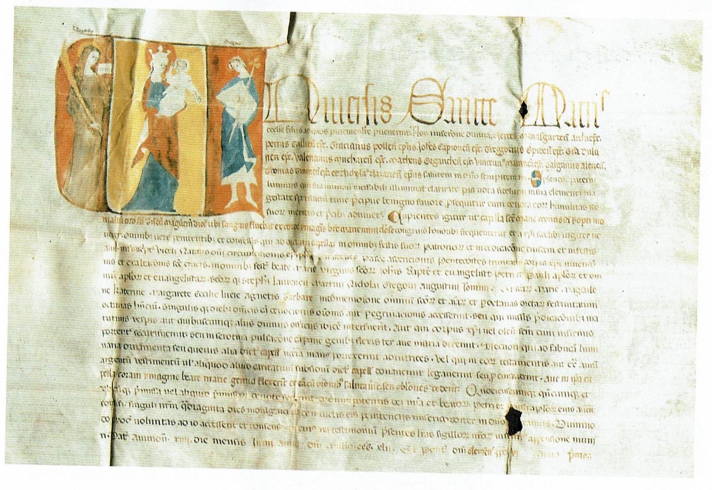
手握独立权柄和神启权威，她开始把书信寄向欧洲每一个权力的中心。她一生留下大约 390 封书信。
"应把您召唤为教会真正的父亲……请勿让您手中的正义蒙尘。"
"你的心智犹如被云翳遮蔽的高墙，四处张望却不得安宁……"
"你必须遵循上帝的公正，切勿让个人私欲蒙蔽了眼睛。"
"我在异象中视你如一个小男孩或疯子……当心，全能的君王会因你的盲目而将你击倒。"
她还发明了一门"未知之语"——1000 多个词汇、23 个字母的完整词表，是人类历史上有记载最早的"人造语言"之一。
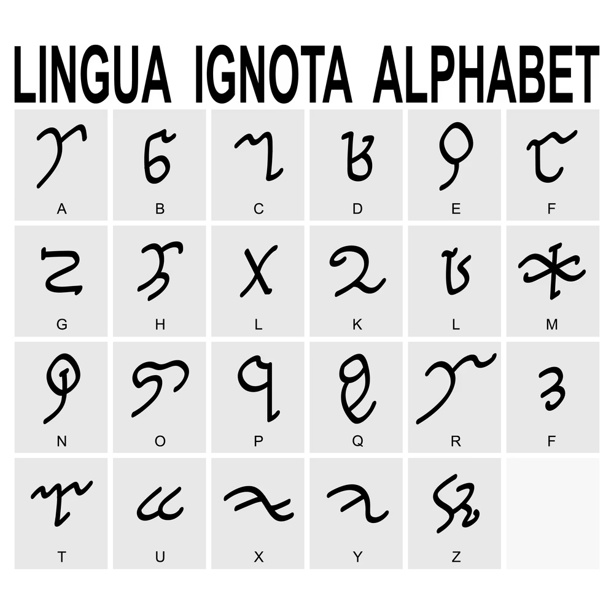
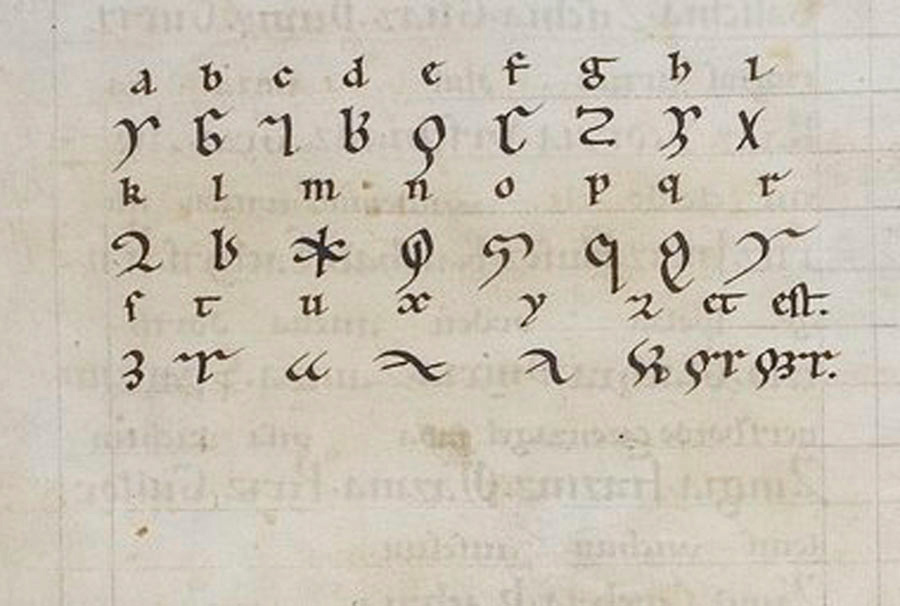
那未被聆听的旋律之声将归于何处？那未被通晓的语言之音又将去往何方？ 沃尔马 · 挚友与秘书的信
沃尔马知道这门语言，听过它的声音，却深知自己无力传承。或许"未知之语"的最终命运是——它和她的音乐一样，源于她独一无二的神启，是一个专属于她个人的神圣秘密。
她的修道院成了整个欧洲寻求智慧与慰藉的灯塔——院长们请教她如何管理顽劣的修女，平信徒们心碎地询问自己夭折的孩子是否升入天堂。
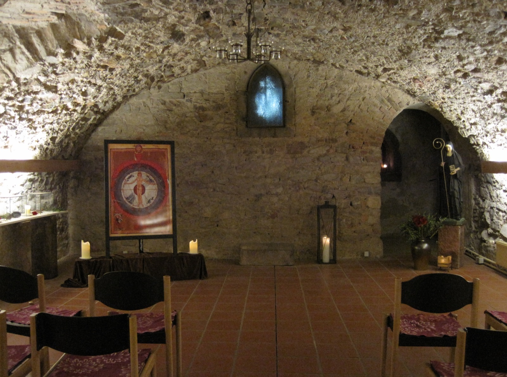
教皇甚至正式授权她——一位女性——走出修道院，公开巡回布道。这在那个"女性在教会中应闭口不言"的时代，无异于一场革命。从 1160 年起，她四次踏上旅途，谴责神职人员的腐败，也斥责清洁派分裂教会。
禁止歌颂上帝，就是魔鬼的胜利！ 1178 · 致美因茨教区的信
在她生命的最后一年，美因茨要求她将一位被开除教籍的贵族遗体迁出修道院墓地。她拒绝了——因为此人临终前已获宽恕。她坚信慈悲高于教条，上帝的宽恕高于人间的判决。美因茨教区的回应，是一道冰冷的禁令：鲁珀茨贝格被禁止举行弥撒，更重要的是被禁止歌唱。这位年近八旬的老人，为了一个亡者的尊严、为了音乐的神圣权利，勇敢地对准了那个曾把她捧上神坛的教会体制本身。
她的离去开启了一段长达八个世纪的沉默——四次官方封圣尝试都失败了。1243 年，那份记录她生平与神迹的封圣文件在送往罗马的途中离奇失踪。
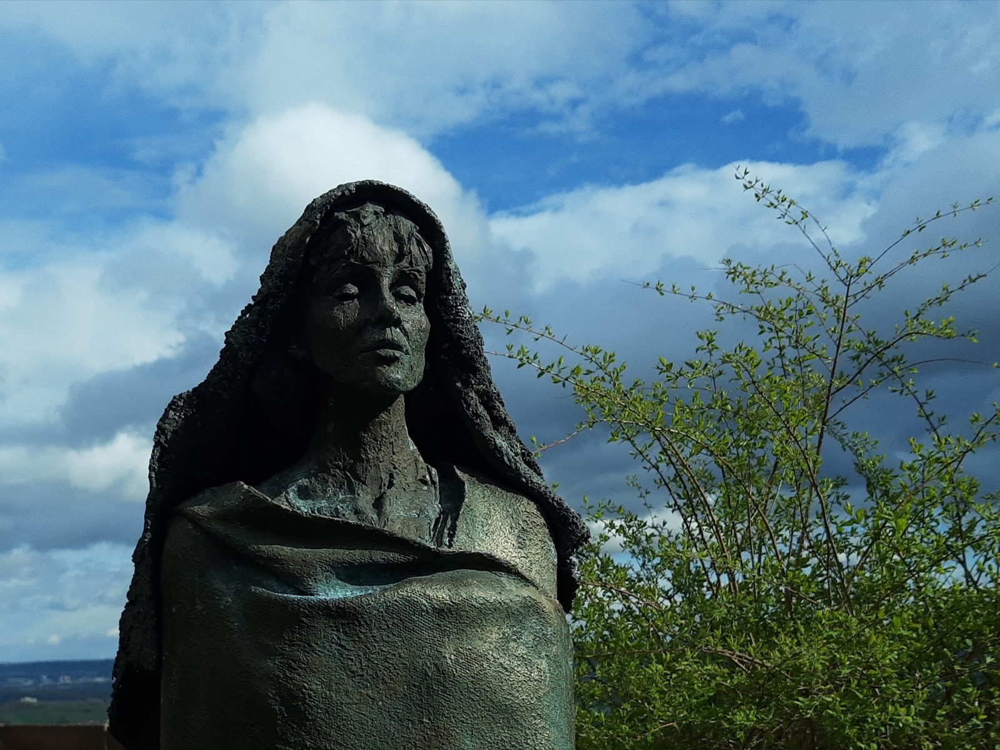
1243 年，那份记录她生平与神迹的封圣文件，在送往罗马的途中离奇失踪。负责调查的人员敷衍了事——珍贵档案永沉历史。仿佛一个残酷的隐喻：随着文件的丢失，她的名字、她的音乐、她的思想，也逐渐被主流历史所遗忘。
把她从遗忘中唤醒的，不是教会，而是 20 世纪的世俗世界。
女权主义学者重新发现了她；朱迪·芝加哥在《晚宴》中为她留下一个席位。
"Viriditas"哲学被奉为圭臬。以她命名的疗愈中心、植物属，甚至一颗小行星。
Sequentia 的严谨复原，大卫·林奇的迷幻改编；Lingua Ignota（Kristin Hayter）以她的未知之语为名。
一位以她命名的现代吟游诗人，用中世纪曲风重新演绎流行乐。
成千上万的朝圣者涌向她的修道院，修女们不得不拆掉牛棚改建游客中心。
教皇本笃十六世以"等效封圣"程序正式承认她，并将她与奥古斯丁、阿奎那并列。
一位用音符触摸天堂的音乐家，一位用草药倾听大地的医学家，一位用未知之语构筑内心宇宙的梦想家——在她所有身份的核心，是一位谦卑的反叛者。 Coda · A Humble Rebel
观看完整视频
网站沿用并扩展了视频文稿的章节结构。视频适合跟着叙事与画面完整进入故事； 网站则适合慢读、比较史料、查看证据边界。
史料与延伸阅读
希尔德加德留下了大量自己的作品——著作、书信、圣歌与"未知之语"——但关于"她是谁"的叙述， 仍必须把一手材料、圣徒传体裁、现代研究和教会叙事分层来看。
| 材料 | 距离 | 最适合回答 | 主要限制 |
|---|---|---|---|
| 《认识主道》Scivias1141–1151，希尔德加德本人 | 一手 | 神学、异象体系、Viriditas 概念雏形 | 神学修辞浓；须与晚年著作对读 |
| 希尔德加德书信集约 390 封 · 12 世纪 | 一手 | 与教皇、皇帝、修道院长的实际来往 | 编辑与重排；部分回信真伪存疑 |
| Vita S. HildegardisGottfried & Theoderich 撰 | 生前起草、身后完成 | 生活轨迹、"神病"叙述、封圣候选材料 | 圣徒传体裁；美化倾向明显 |
| Barbara Newman — Sister of Wisdom1987, rev. 1998 | 现代研究 | Viriditas 神学、女性主义解读、Lingua Ignota | 单一学者视角；仍是主流参考 |
| Sabina Flanagan — A Visionary Life1989, rev. 1998 | 现代研究 | 生平、与尤塔的关系、政治斗争 | 部分推断已被后续研究修正 |
| Pope Benedict XVI · 2012 册封文教会官方文本 | 现代教会 | 教会圣师册封的官方立场 | 官方立场；不代表历史真相 |
glyph-viriditas.svg、glyph-cosmic-wheel.svg、glyph-branch.svg、glyph-root.svg、glyph-star.svg）仍为原创 SVG，承担版式节奏与视觉隐喻。Data · Reading Signals
本站只定义章节、视频与来源入口的匿名事件。当前没有分析供应商， 不发送网络请求，不写入 Cookie 或持久存储，也不识别读者。


{kind=link}